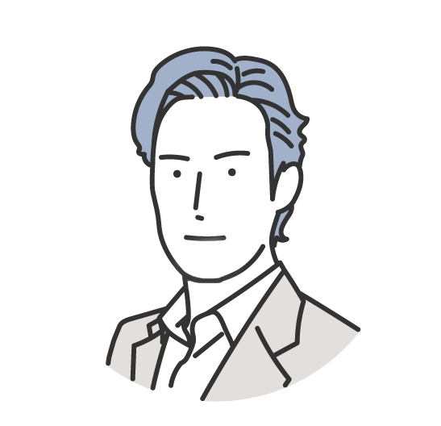

demiglaze
2000年代前半からネット広告を始め大体20年目。2年目に月収100万を超えてから専業で仕事をしていましたが、兼業へ。 9月にブログを立上げて、その経緯を記しています。
簡単にこれまでの自分のプロフィールを紹介したいと思います。
当初10年ほどは年間で8桁前後ほどまで行くことが何回かありつつも、 そのたびにGoogleのアップデートでアクセスを減らしてはの繰り返しでした。
ここ5年ぐらいは兼業の状態であまり作業が出来ていないながらも、このサイトをベースに地道に記事作成を続けています。
当時はまだアフィリエイトの初期と言っていい頃で、ブログもなくホームページを作っている人がまだ珍しい時代でした。 アフィリエイトの存在をしってHTMLを勉強して作ったのを覚えています。
がむしゃらに作ったホームページがGoogleに表示され、半年ほどで数万円の収益になりました。その後、順調にアクセス数も増えて 収益も比例していったため、1年後には意を決して独立。
2003年から3年程が経ち、最低限のHTMLがわかってきた当時、5個ぐらいサイトを運営していました。 いまでは信じられませんが作っていたサイトが「キャッシング」、「クレジットカード」というビックキーワードでYahoo、Googleの1ページ目に表示されています。 確か5位か6位ぐらいだったと思います。そして、この時期に始めて月間の成約が100万を超えた気がします。
正直、1ページ目に表示された時は驚いたのですが、これでアクセス数や収益が大きく変わったかと言うと（私の場合は）残念なことにそのようなことはなく、 2つ合わせて成約が30万ぐらい。アクセス数も増えるには増えましたが予想を下回る伸び。
カード系のサイトはあっていなかったのか自然とその他のジャンルに移動していく形になります。
唯一、当時から作って残っているのは、ドメインやレンタルサーバーをジャンルにしたこのサイト。 このサイトも数年間は「ドメイン取得」で1位となっていたことがあります。
ドメイン取得で1位になっていた時期は、いまのように法人サイトが多くなかったこともありこのキーワードで1位になっているだけで、それなりの成約数になっていました。 それにより特別単価が発生し、単体で月7桁ほどいくことも。その他の転職系ジャンルのサイトと合算して月190万円というのが、これまでで最も成約が多かった月になります。
そして2005年頃からは何回か年間でみて8桁前後までいくも、その度にGoogleのアップデートに被弾しながらサイト制作を続けていきます。 結果として2003年からの15年間のアフィリ糸収入は大体サラリーマンの平均年収ぐらいの収益に落ち着いています。
収入の不安定さと、作業がスムーズにできない、記事が書けないという不安定さもあり2018年にはサラリーマンへの転職を決意し、兼業になることに。
経験が長いので知識だけはそれなりにありつつも、作業的な問題でまったく再浮上することなくここ5年ほど運営しています。
これまで作ったサイトは数知れず、100サイト～200サイトは作ってきました。 基本的にはこのレンタルサーバーのサイトや転職サイトのジャンルがメインどころでした。
その他、クレジットカードのサイトも当初はいくつか作っていましたが、紆余曲折あり
コンテンツSEOが登場した2015年以降に作成したサイトは「英語ジャンルサイト」「転職ジャンルサイト」を作りましたが、 ほとんど兼業状態で作業にまっとうできないこともあり、どのブログも20ページも作りこめずに削除。
の時点で運営しているサイトは、このドメインサイトだけになります。 ただし、9月にブログ企画で転職特化サイトを作成したため、2つになります。
20年続けてきたからこそわかる、アフィリエイトの雑感を書いていきます。
まず、前提としては人気サイトでも5年ぐらいで大体のサイトが入れ替わりますね。10年続けられるようなサイトは、このサイトのように1/10以下にアクセス数が下がっても それを受け入れている場合に限ると思います。
Neverなど人気の法人サービスでも、多くのサイトが入れ替わっています。価格コムや食べログ、クックパッドなど口コミを持っていてコンテンツが強いサイトなどは 10年経っても変わっていませんが、基本的に個人サイトは人気がでても10年持たないのがほとんどでしょう。

demiglaze
Web制作を始めて約19年になります（HTML/css、Photoshop、Webマーケティング）。2005年から当サイトの運営を開始。 これまでに300個以上のドメインを取得、10社を超えるレンタルサーバーを利用してきました。